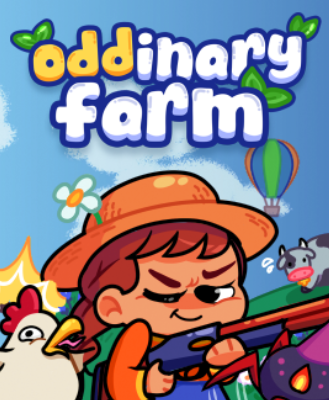
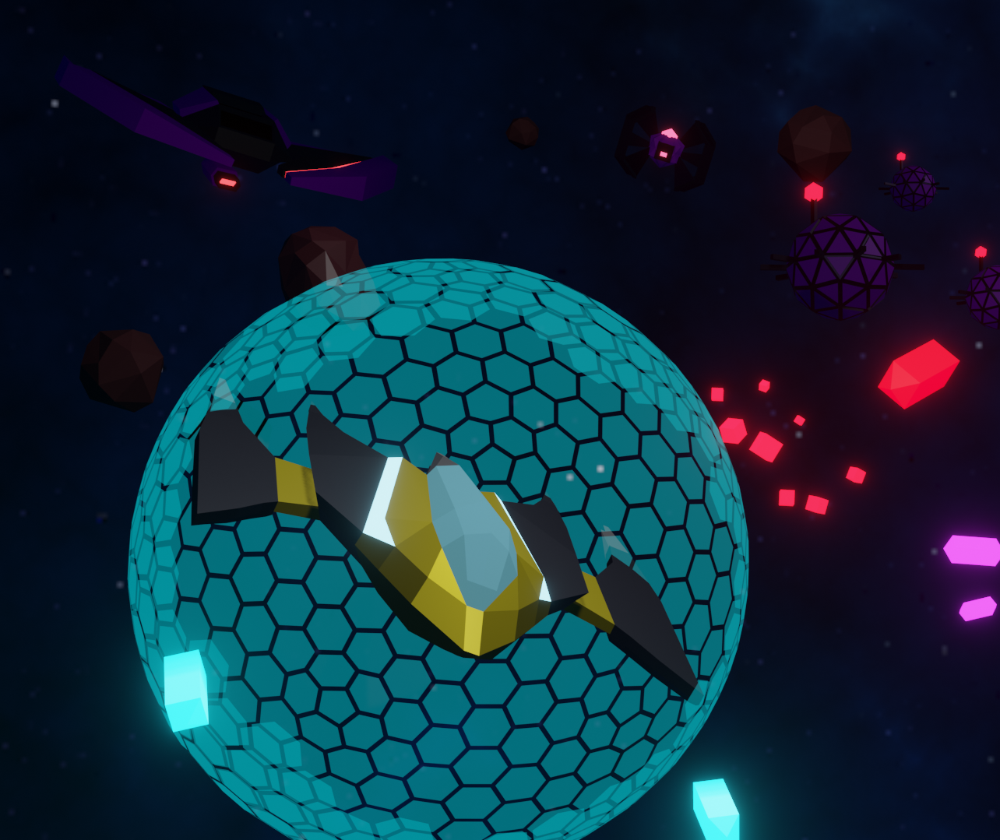
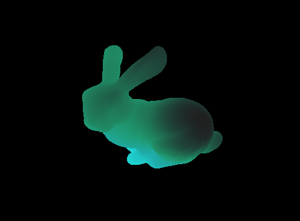
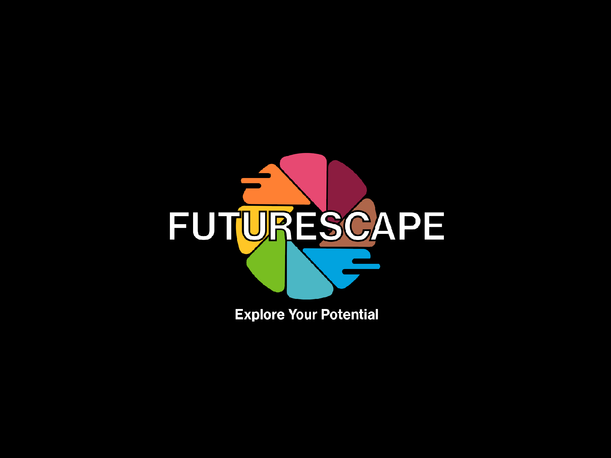
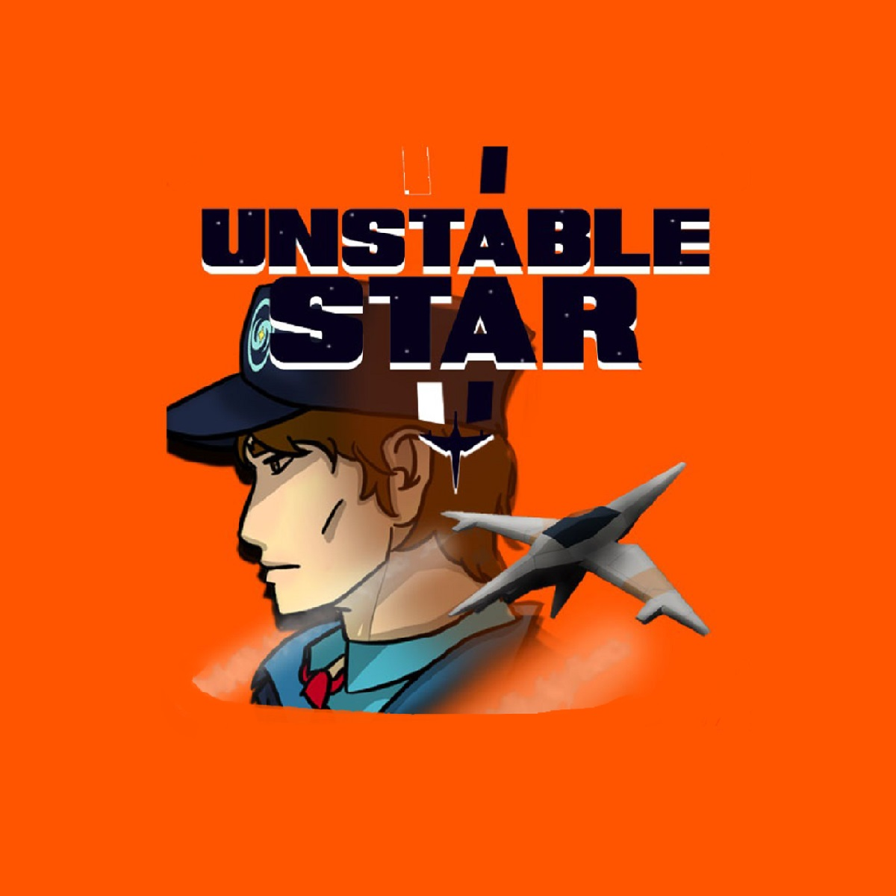
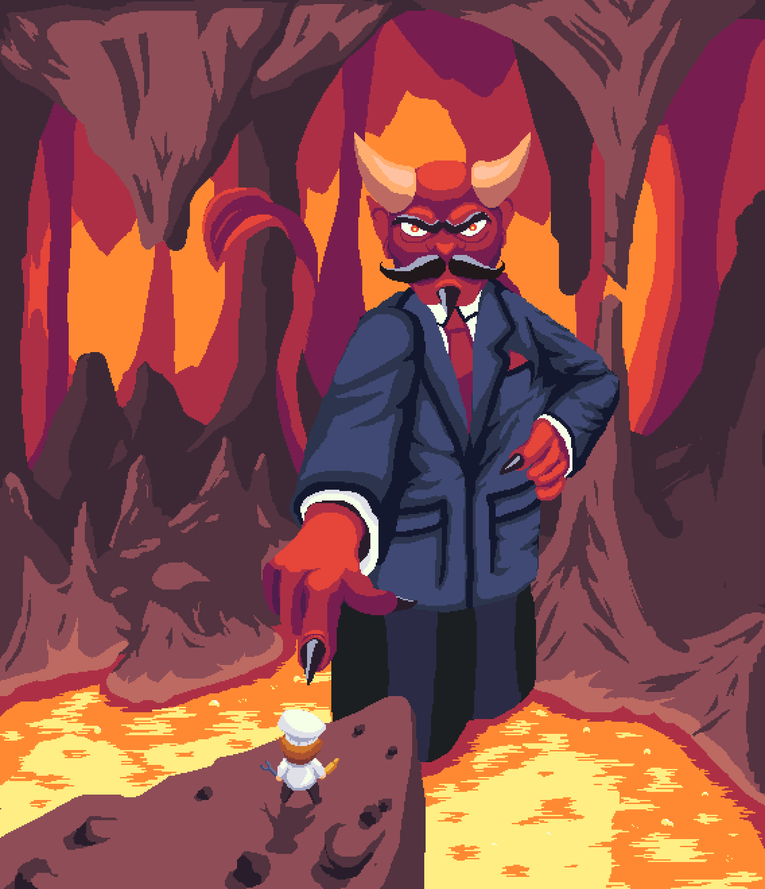

Labyrinth Procedural Generator
Nov 2024 - Present
The Labyrinth is a interconnected procedural dungeon generation algorithm built in Unity/C# that creates seamlessly joined, thematically distinct 3D areas without loading screens. The algorithm's rules are heavily inspired by the rogue-likes like Enter the Gungeon and the linear level design of games like Dark Souls and Zelda.

Oddinary Farm
May 2024 - Present
Oddinary Farm is a 2D arcade-style multiplayer farming game that was made in Unity/C# using Netcode For GameObjects and Steamworks Facepunch. Players can plant crops, build defenses, and explore a procedurally generated landscape. Creating with a small team of college graduates, Spring Rolls Studios, dedicated to legitimizing a studio and a solid title.

Rogue Nebula
June 2023 - July 2023
Developed for the Video Game Development Club's summer session, this game challenges players to survive endless waves of enemies in pursuit of a high score. Inspired by classic arcade titles like Galaga, Defender (1981), and Space Invaders, the game features an ability system, dynamic progression system, reactive UI, vibrant effects, and varied enemy behaviors.

HLSL Shaders
Jan 2025 - May 2025
Compilation of shaders I've created in HLSL using the Monogame Framework.

Future Scape
Jun 2024 - April 2025
Developed for Enterprise Technology, this virtual reality career explorer targets primary and
middle school students. It features a variety of minigames exploring careers like pharmacology, manufacturing, forensic science and more.
I solely created the pharmacy, manufacturing, and urban planning minigames.
As a pharmacist, players dispense medications within a
time limit. In manufacturing, players design assembly lines and combine components on a world space grid to create products for sale.
In urban planning, players build your own city on a world space grid while managing a budget and resources at your disposal.

Unstable Star
Sept 2024 - May 2025
Developed for the Video Game Development Club's 2023-24 session, this game tells a comedic and heartwarming story of a lowly guard challenging a galactic empire. Travel through three variable levels including dynamic objectives and challenging boss fights. Players journey through three diverse levels with dynamic objectives and challenging boss fights. The game features a full animated dialogue system, weapon and ability inventory, a responsive UI, vibrant sounds and VFX, and varied enemy behaviors.

The Devil's Diner
April 2024
Created with a small team for Ludum Dare Game Jam #50, this game stars a simple chef doomed to cook the devil's for demons in Hell's most treacherous kitchen. Developed in 72 hours, the game features a crafting system, interactive UI, leaderboard, cutscenes, and a level system. This project was so enjoyable to work on we decided to attempt to port the game to mobile for a short time.